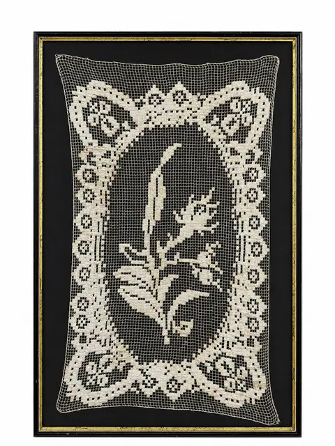
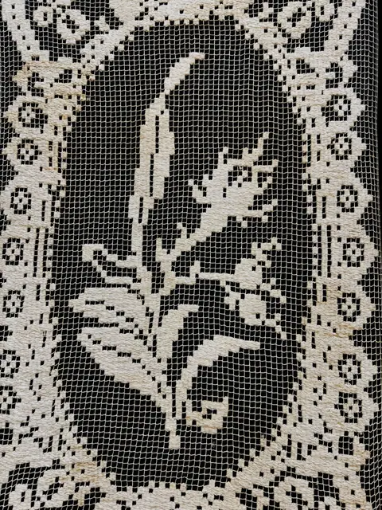
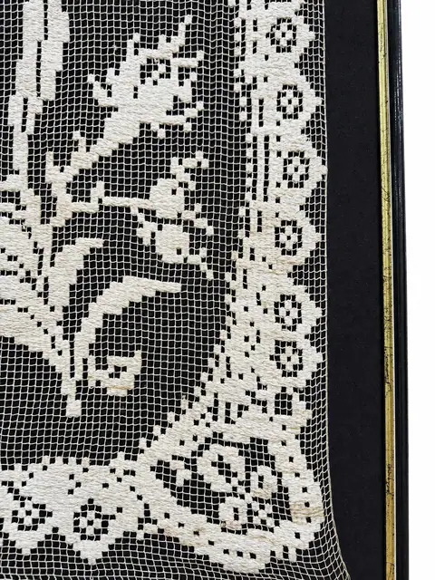

Handmade Objects
Antique Hand-Worked Lace Panel, Floral Medallion, Framed Under Glass
Price Upon Request



About the Item
Hand-worked needle lace panel with a central floral medallion within a scalloped border. Mounted on a dark ground and framed under glass. Vertical format.
Details
- Dimensions:
- Height: 33.0 in (83.82 cm)
Width: 21.0 in (53.34 cm)
outside of frame - Condition:
- Offered in the condition shown in the photographs.
- Reference Number:
- VO-06